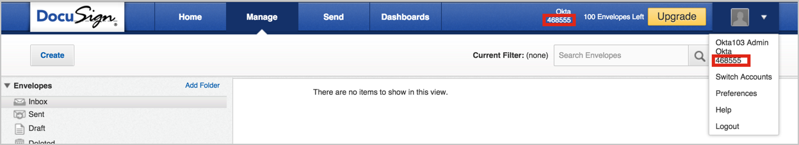
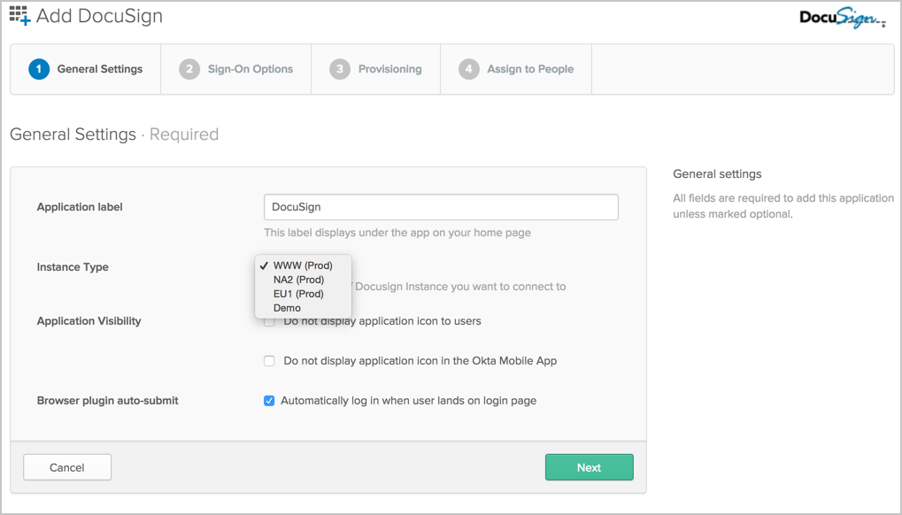
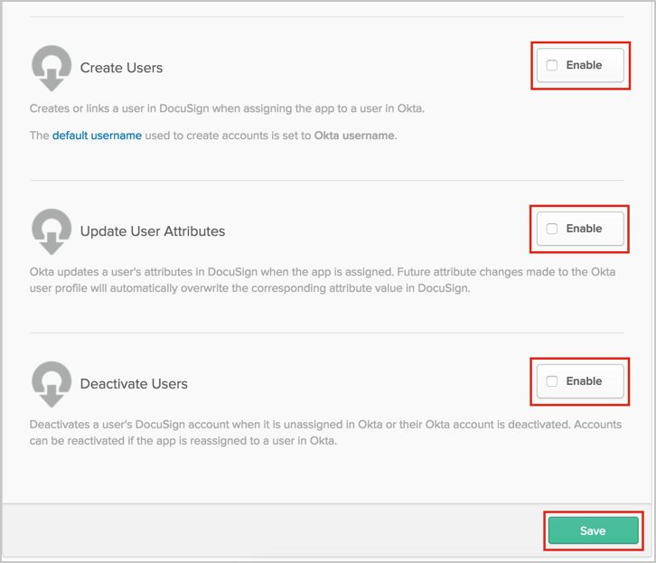
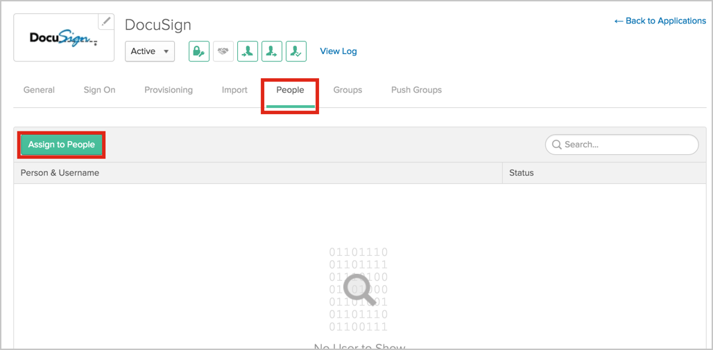
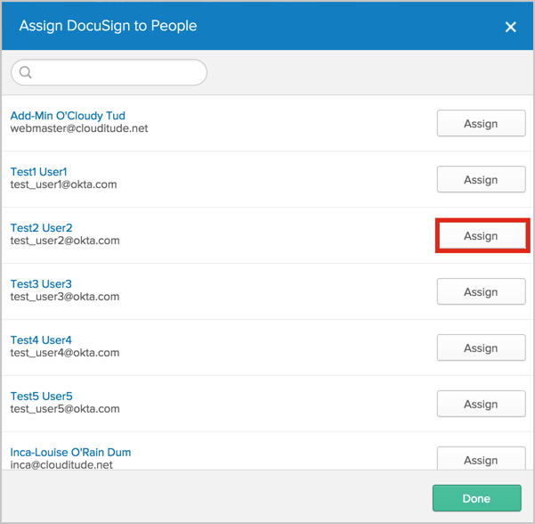
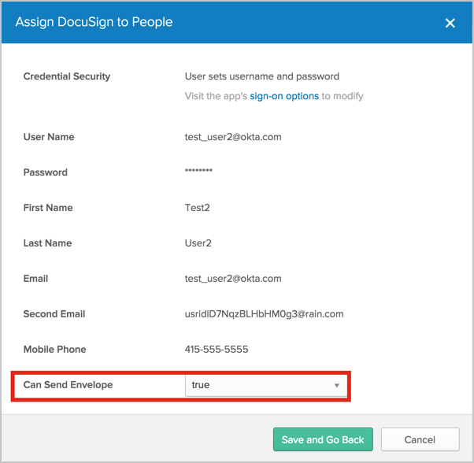
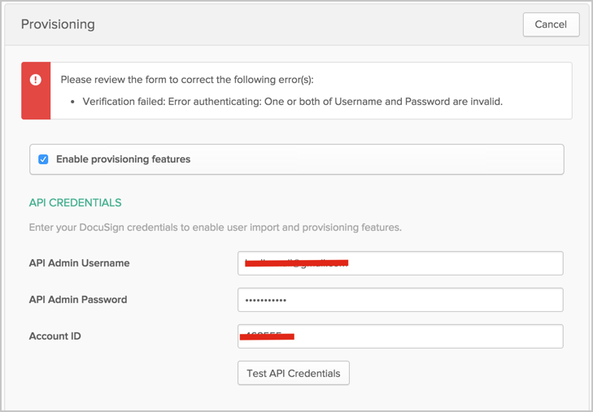
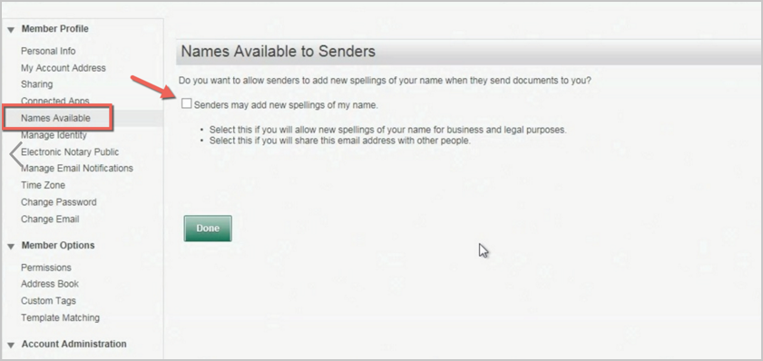
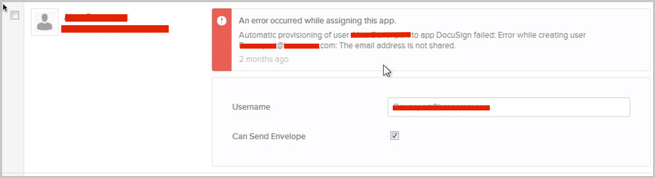

This guide provides the steps required to configure Provisioning for DocuSign.
Make sure your account plan supports silent user activation via API.
This means that an activation email won't be sent to created user, who will immediately become Active.
If you find that you have provisioned users created in Docusign with status of ActivationSent, contact DocuSign Support to have the Plan associated with your DocuSign account changed to one which turns off email activations.
See https://support.docusign.com/guides/dfs-admin-guide-add-users
Make sure your users have enabled Senders may add new spellings of my name flag in the Preferences > Names Available section. Otherwise you won't be able to assign Okta users to existing Docusign users. This is a user specific field and cannot be changed by Docusign Admin, only the user can do this for himself.
The following provisioning features are supported:
Note: This app supports the full set of group operations. For more information, see Using Group Push.
Complete the following before you configure provisioning for DocuSign:
Obtain your Account ID:
Log in to DocuSign as an administrator.
Your Account ID is at the top of the page; and is also available by clicking your profile icon, as shown below:

Verify the DocuSign app’s General Settings in Okta:
In Okta, select the General tab for the DocuSign app.
Specify an Instance Type:

Configure your Provisioning settings for DocuSign as follows:
Check the Enable provisioning features box.
Enter your DocuSign API Credentials:
Admin Username.
Admin Password.
Admin Account ID.

Scroll down and select the Provisioning Features you want to enable.

Click Save.
You can now assign people to the app (if needed) and finish the application setup.
To assign users to the Docusign app: open the app, select the People tab and then click the Assign to People button.

Then, in the Assign DocuSign to People dialog, select a user, then click Assign button.

You can set whether user can send envelopes or not by selecting either true or false in the from Can Send Envelope field. If set to true, this user can send envelopes though the DocuSign.

Errors encountered while authenticating with Docusign:
Invalid username/password provided or wrong DocuSign Instance Type selected in General Settings.

Invalid Account ID.

Errors encountered while assigning user on Docusign application:
Docusign user has disabled Senders may add new spellings of my name flag in Preferences > Names Available section.

May produce errors such as this one:
